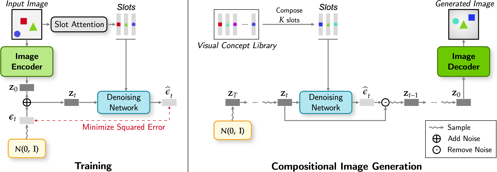
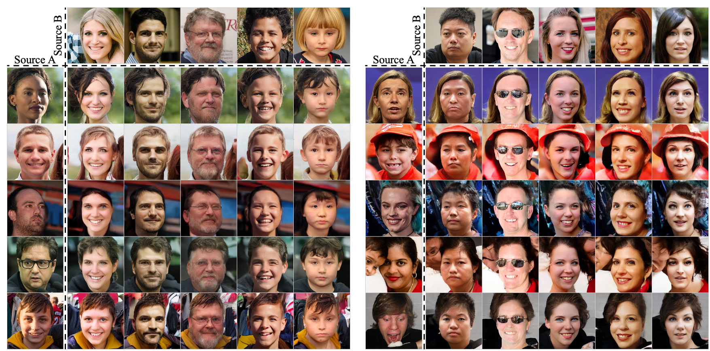

Abstract
Despite remarkable recent advances, making object-centric learning work for complex natural scenes remains the main challenge. The recent success of adopting the transformer-based image generative model in object-centric learning suggests that having a highly expressive image generator is crucial for dealing with complex scenes. In this paper, inspired by this observation, we aim to answer the following question: can we benefit from the other pillar of modern deep generative models, i.e., the diffusion models, for object-centric learning and what are the pros and cons of such a model? To this end, we propose a new object-centric learning model, Latent Slot Diffusion (LSD). LSD can be seen from two perspectives. From the perspective of object-centric learning, it replaces the conventional slot decoders with a latent diffusion model conditioned on the object slots. Conversely, from the perspective of diffusion models, it is the first unsupervised compositional conditional diffusion model which, unlike traditional diffusion models, does not require supervised annotation such as a text description to learn to compose. In experiments on various object-centric tasks, including the FFHQ dataset for the first time in this line of research, we demonstrate that LSD significantly outperforms the state-of-the-art transformer-based decoder, particularly when the scene is more complex. We also show a superior quality in unsupervised compositional generation.
Method
Left: In training, we encode the given image as a VQGAN latent and as slots. We then add noise to the VQGAN latent and we train a denoising network to predict the noise given the noisy latent and the slots. Right: Given the trained model, we can generate novel images by composing a slot-based concept prompt and decoding it using the trained latent slot diffusion decoder.
Unsupervised Object-Centric Learning

LSD achieves tighter object boundaries, less object splitting, and cleaner background segmentation compared to other state-of-the-art techniques. These advantages are especially noticeable in more complex datasets.
Compositional Generation

LSD provides significantly higher fidelity and more clear details compared to the other methods.
Slot-Based Image Editing - Background Replacement

In LSD, replacing the background of an image can be achieved by replacing the background slot.
Slot-Based Image Editing - Object Insertion

In LSD, we can insert new objects by adding the corresponding object slot to the existing set of slots.
Slot-Based Image Editing - Face Replacement
